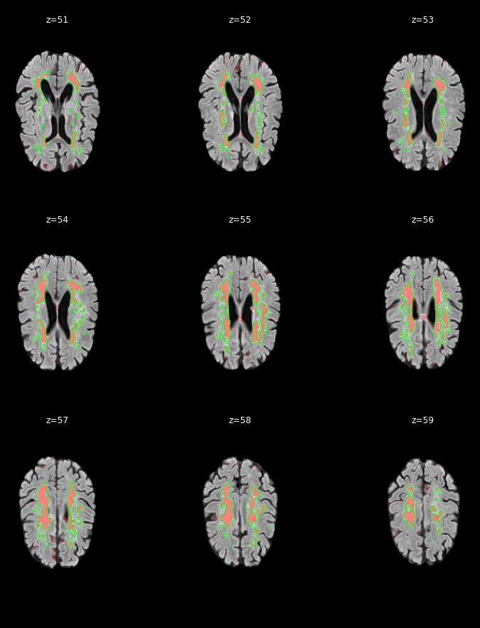

Site: Amsterdam · Voxel volume: 3.516 mm³

| Metric | Value |
|---|---|
| Dice (DSC) | 0.7500 |
| Raw predicted lesion voxels | 18,201 |
| Predicted lesion voxels | 13,857 |
| Reference lesion voxels | 13,342 |
| Predicted lesion clusters | 143 |
| Predicted volume (mm³) | 48,717.9 |
| Reference volume (mm³) | 46,907.3 |
| Max WMH probability | 0.9854 |
| Prediction threshold | 0.2500 |
Red = predicted WMH (α=0.5). Green outline = ground truth.